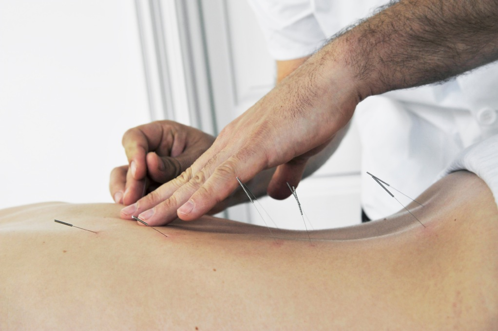
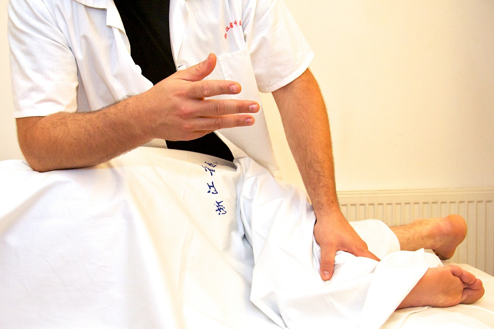
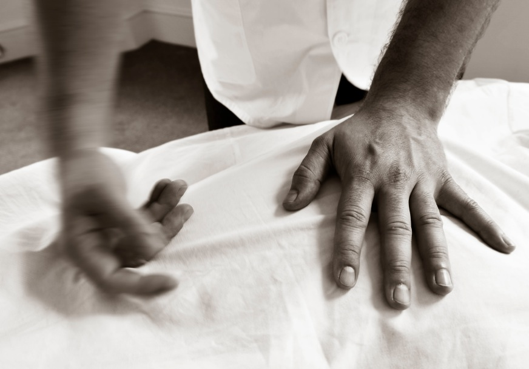
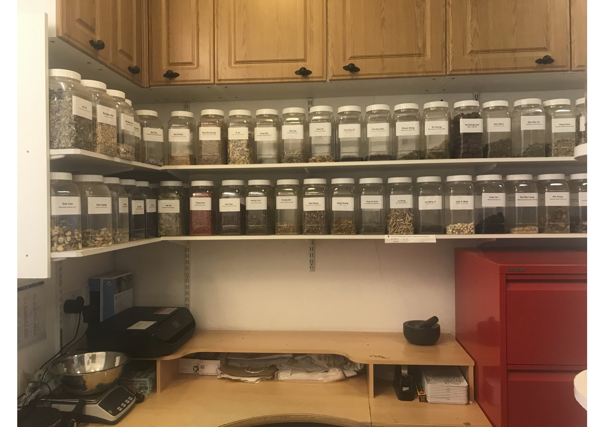
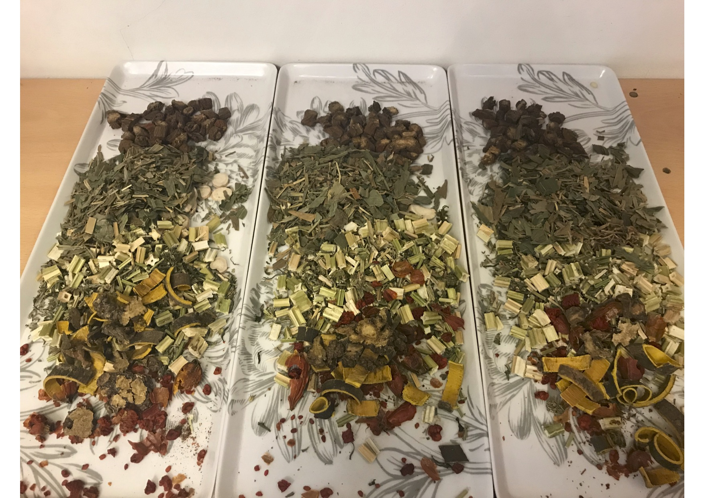
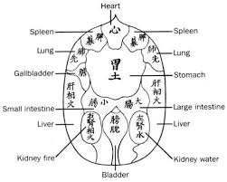

A typical session may include any combination of the above, tailored to your preferences. And yes — people in China really do use Chinese medicine: there are around 4,000 large CM hospitals and over 42,500 regional CM clinics there, treating an estimated 416 million people a year, with over 450,000 CM doctors and allied professionals in practice.
Painful conditions & injuries
One of the most common reasons people come to see us — from professional sportspeople and personal trainers to amateur runners, yoga teachers, office workers with RSI, new parents with sore backs, and older patients often resigned to living with aches and pain. Our approach is hands-on and targeted, not 20 minutes alone with some music — each treatment aims for a noticeable, felt change.

Acupuncture
The type of acupuncture we offer is based on Traditional Chinese Medicine (TCM), tested and refined in China for thousands of years. Modern research is also building a scientific picture — needling has been shown to have measurable effects on pain, the hormonal system, the nervous system, and blood flow.
Our approach is hands-on: we target points you will actually feel to be relevant to your injury, often noticing muscles releasing or a momentary deep ache — good signs that tension is being released and your body is returning to natural function.
Tui Na / Bodywork
Tui Na medical massage is a specialised system of bodywork using strong, focused techniques, widely used in Chinese hospitals and clinics for pain conditions that might be treated by a physiotherapist, osteopath or chiropractor here. It identifies and changes soft tissue that has become pathological, correcting dysfunctional movement patterns.
A treatment may combine Tui Na with acupuncture, gua sha, moxa, cupping, joint mobilisation and neuromuscular soft-tissue techniques — deep without being “grating”, allowing lasting change.



Chinese Herbal Medicine
Taking herbal medicine twice a day gains significant results at a faster pace than a weekly clinic visit alone, improving sleep, digestion and energy as well as the specific symptom that brought you in. Herbs are particularly recommended for chronic conditions, including skin problems, digestive issues, gynaecological complaints and fertility issues.
Chinese herbal medicine draws on an unbroken, documented tradition going back to the 3rd century BC — two millennia of clinical practice and refinement. In China, many state hospitals offer Chinese herbs alongside Western treatment.

Abdominal Zang Fu Acupressure

Practised at Yi Dao as taught in the Yin-style Ba Gua tradition by Andrew Nugent-Head, this deeply relaxing treatment uses circular, rhythmic movements of varying intensity on the abdomen to massage the internal organs and improve blood flow to them, relaxing connective tissue.
It’s a versatile treatment: we regularly find it effective for digestive complaints (constipation, IBS), menstrual problems and fertility issues, as well as stress and insomnia — Western science increasingly refers to the digestive system as the body’s “second brain”, which may explain why calming the gut has such a profound effect on mood.
Complementary treatments
A wider range of therapies from specialist practitioners working alongside our Chinese medicine team — see About & Team for full bios.
Osteopathy
A Western look at pain of the musculoskeletal system, with Lilly Jukic.
Cranial Osteopathy
Suitable for all ages from birth onwards, with Lilly Jukic.
Massage & Reiki
Signature sports massage, MLD and reiki healing with Dragos Corcoveanu (ConidraFIT).
Reflexology
Including pregnancy, spinal, lymphatic drainage and facial reflexology, with Karen Ford.
Counselling / Therapy
Integrative talking therapy with Nicole Castellani or Mariane Cordeiro.
Homeopathy
Gentle stimulation of the immune system with no side-effects, with Samantha Gladden.
Prices, by treatment
We believe good healthcare should be available to anyone: Conny & Zarig keep a limited number of pro-bono sessions available each week for people in need who cannot afford treatment — email us with your details for consideration.
Acupuncture & Tuina/Bodywork Available Monday–Saturday
| Practitioner & session | Price |
|---|---|
| Zarig or Conny Cooper — all sessions (1 hour) | £80 |
| Zarig Cooper — 30 min Tuina session | £50 |
| Exceptional circumstances (out-of-hours, home visit, specialist sports treatment) | £250 |
| Tal Mordechay — Acupuncture | £80 |
Chinese Herbal Medicine Mon, Tue, Fri & Sat — Conny Cooper
We recommend brewing herbs with a thermos (available with us for £30) — it’s easier, faster, and reduces the amount of herbs needed.
| Item | Price |
|---|---|
| Cost of herbs — thermos cook | £3.50/day |
| Cost of herbs — cook on the stove | £8/day |
| Consultation fee, herbs only | £50 |
| Consultation fee, herbs alongside acupuncture | Free |
| Hand or foot soak (1 bag lasts 3 days) | £5/bag |
Abdominal Massage Available Monday–Saturday
| Practitioner & session | Price |
|---|---|
| Conny or Zarig Cooper — 1 hour | £80 |
Osteopathy Lilly Jukic — throughout the week, incl. weekends
| Session | Price |
|---|---|
| All sessions | £90 |
Massage & Reiki Dragos Corcoveanu (ConidraFIT) — throughout the week, incl. weekends
| Treatment (60/90 min) | Price |
|---|---|
| Signature Sports Massage | £300 / £450 |
| Healing Massage & Reiki Experience | £450 / £675 |
| Signature Manual Lymphatic Drainage (MLD) | £300 / £450 |
| Advanced Reiki Healing Booster & Holistic Massage (duration varies) | £2,250 |
Cranial Osteopathy Lilly Jukic — Wed & Thu, other days by appointment
| Session (1 hour) | Price |
|---|---|
| Adults | £90 |
| Children | £80 |
Reflexology Karen Ford — throughout the week by appointment, incl. weekends
| Treatment | Price |
|---|---|
| Reflexology (55 min) | £75 |
| Foot or Facial Reflexology (25 min) | £55 |
| Facial Reflexology (55 min) | £75 |
| Foot and Facial Reflexology (85 min) | £110 |
| Indian Head Massage (25 min) | £55 |
| Children Reflexology (25 min) | £45 |
| Celluma LED Light Therapy, standalone (30 min) | £45 |
| Celluma LED Light Therapy, add-on | £35 |
Counselling / Therapy Throughout the week, incl. weekends
| Practitioner & session | Price |
|---|---|
| Mariane Cordeiro — Individuals | £65 |
| Mariane Cordeiro — Couples | £70 |
| Nicole Castellani — Individuals | £65 |
Homeopathy Sam Gladden — Thursdays & Saturdays
| Session | Price |
|---|---|
| Initial, Adults (1.5 hr) | £80 |
| Initial, Children (1.5 hr) | £75 |
| Adults (60 min) | £55 |
| Children (60 min) | £50 |
Frequently asked
Is Chinese medicine actually used in China?
Yes, extensively — there are around 4,000 large Chinese-medicine hospitals and over 42,500 regional clinics, treating an estimated 416 million people a year, with over 450,000 CM doctors and allied professionals employed.
What should I expect from an acupuncture session?
Forget any idea of a few pins left in for 20 minutes with relaxing music. Our approach is hands-on: we target points you’ll actually feel are relevant to your injury, and aim for a noticeable change with every treatment.
What can herbal medicine help with?
It’s particularly recommended for chronic conditions affecting overall health — including skin problems, digestive issues, gynaecological complaints and fertility issues — alongside improvements in sleep, digestion and energy.
I’m already on medication — can you still help?
Yes — we regularly work with patients already taking medication, and in a number of cases have been able to help reduce reliance on certain medications such as painkillers, anti-depressants or sleeping tablets. Please bring a list of what you’re taking to your first appointment.
What if I can’t afford treatment?
Conny & Zarig keep a limited number of pro-bono sessions available every week for people in need of medical treatment who cannot afford it. Email us with your details for consideration.